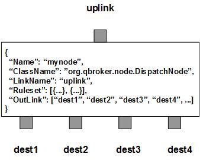

DispatchNode is a router node that dispatch messages to various destinations with the support of load balance and/or redundancy. The incoming JMS messages will be routed to various destinations (outlinks) according to their content, the load and preconfigured rulesets. DispatchNode contains one or more outlinks as the destinations. Those outlinks are grouped exclusively according to their group names. Within each group, all the oulinks are equivalent and backing up with each other in case of failure or high load.
DispatchNode uses the predefined rulesets to dispatch incoming messages. These rulesets categorize messages into non-overlapping groups. Therefore, each rule defines a unique message group. The ruleset also specifies the association between the message group and the outlinks. For those messages falling off all defined rulesets, DispatchNode always creates an extra ruleset, nohit, to handle them. By default, nohit ruleset always uses the last outlink unless there is one defined explicitly.
Content Switch feature is achieved via the rulesets. A ruleset defines a group of messages and associates them with a dispatch rule. Currently, it only supports four types of rules, preferred, roundrobin, weighted and sticky. If the type of the ruleset is set to preferred, all the messages in the same ruleset will stick together and go to the same preferred destination. In this case, their message affinity is honored. If the type of the ruleset is set to roundrobin, the node will dispatch messages in the same ruleset to one of the available destinations in the group round-robinly. In this case, there is no fixed destination associated with the group. This way, we can distribute messages to multiple destinations for load balance. For the type of weighted, it is similar to the type of roundrobin except for that the routing decision is based on the load rather than in roundrobin way. If the rule is set to sticky, the incoming messages will be routed to their destinations according to the hash values of a perdefined key retrieved from the messages. Similar to the type of preferred, the message affinity is also honored for sticky rulesets.
You can define as many rulesets as you want as long as it is under the limit. However, DispatchNode always creates an extra ruleset for those messages which do not match any predefined ruleset. This extra ruleset is called nohit. The dispatch rule of nohit is preferred by default.
However, there may be a case that one of the destinations is not available or its load is too high. DispatchNode will find a good outlink and switch all messages on the bad outlink to the good one as a failover. The pending messages will be also moved over in the correct order. In order to do that, you have to enable the dynamic sessions by specifying the parameter of SessionTimeout. SessionTimeout determines how long to mark the outlink in pause temporarily before switching it to another outlink. Also you need to associate all the outlinks to their reports so that the node is able to query their status and load. You also need to specify the load threshold for the queue depth. The threshold should contain three numbers, LOW, MEDIUM and HIGH. The last, you have to set up reporters to watch the destinations and to update the shared reports. DispatchNode throttles the message flow along all outlinks according to the shared reports.
DispatchNode has also a heartbeat that controls how often it queries the shared reports and updates the status of rulesets and outlinks. In case the queue depth is less than LOW, the node treats it as normal. If the depth is between LOW and MEDIUM, the node will slow down the flow by skipping the outlink every other time. If the depth is at or above MEDIUM, the node will mark the outlink in pause unitl the session timeout. Then it switches all rulesets out of the outlink and marks the outlink in standby mode. If the load on the remote queue drops to LOW, the node will switch all rulesets back to the original outlink and marks the outlink in pause until the session timeout. As you see, SessionTimeout delays the failover and failback so that there is enough time for those delivered messages processed at their destinations. In this way, once the other messages are sent to a new destination, the message affinity is kept to some extent.
DispatchNode always adds an extra ruleset for the nohit messages. It assumes the last outlink is always for nohit, unless NohitOutLink is defined. This nohit ruleset is always the first ruleset with the id of 0. On the node level, DisplayMask and StringProperty control the display result of outgoing messages.
Apart from the common properties, there are three implementation specific properties for DispatchNode.
| Property Name | Data Type | Requirement | Description | Examples |
|---|---|---|---|---|
| SessionTimeout | integer | optional | timeout of the session in sec for failover | 120 (default: 300) |
| Heartbeat | integer | optional | interval in sec to query shared reports | 30 (default: 60) |
| Threshold | 3 integers separated by commas | optional | thresholds for the depth of the remote queue | 30,70,90 (default: 10,50,100) |
The dispatch operation is executed via the pre-defined rulesets. Therefore, the configuration of the rulesets is critical to the operations of DispatchNode. Here are complete properties of rulesets for DispatchNode.
| Property Name | Data Type | Requirement | Description | Examples |
|---|---|---|---|---|
| Name | alphanumeric with no spaces | mandatory | name of the ruleset | event |
| RuleType | string of preferred, sticky, weighted or roundrobin | mandatory | type of the ruleset | preferred |
| PreferredOutLink | alphanumeric with no spaces | mandatory for preferred only | name of the preferred outlink | aps1_in |
| KeyTemplate | string | optional | template for the sticky key | ##site## |
| KeySubstitution | string | optional | text subsctitution for the sticky key | s/^0// |
| FormatterArgument | list | optional | list of post format operations | see example |
| JMSPropertyGroup | list | optional | list of pattern groups on properties to select messages | see example |
| XJMSPropertyGroup | list | optional | list of pattern groups on properties to exclude messages | see example |
| PatternGroup | list | optional | list of pattern groups on body to select messages | see example |
| XPatternGroup | list | optional | list of pattern groups on body to exclude messages | see example |
| StringProperty | map | optional | for setting the user properties on the messages | see example |
{
...
"Ruleset": [{
"Name": "bypass",
"RuleType": "preferred",
"PreferredOutLink": "BYPASS",
"JMSPropertyGroup": [{
"JMSType": "^score$"
}]
}],
...
}
where it routes the messages to the outlink of BYPASS.
Here is an example of the sticky ruleset.
{
...
"Ruleset": [{
"Name": "tax",
"RuleType": "sticky",
"KeyTemplate": "##site##",
"JMSPropertyGroup": [{
"context": "^tax"
}]
}],
...
}
where it calcautes the hash value from the key and routes the messages
to the outlink mapped from the hash value. Different keys will have different
hash values. Therefore, the messages will be routed to different outlinks
according to their key values.
Here is an example of the roundrobin ruleset.
{
...
"Ruleset": [{
"Name": "news",
"RuleType": "roundrobin",
"JMSPropertyGroup": [{
"JMSType": "^(news|story|report)$"
}]
}],
...
}
where it routes the messages to all the available outlinks in the round-robin
way.
Here is an example of DispatchNode:
{
"Name": "node_dispatch",
"ClassName": "org.qbroker.node.DispatchNode",
"Description": "dispatch messages according to content",
"Operation": "dispatch",
"LinkName": "root",
"Capacity": "12",
"DisplayMask": "0",
"Debug": "11",
"Heartbeat": "30",
"SessionTimeout": "120",
"Threshold": "25,50,100",
"Ruleset": [{
"Name": "news",
"RuleType": "roundrobin",
"JMSPropertyGroup": [{
"JMSType": "^(news|storyl|report)"
}]
},{
"Name": "sport",
"RuleType": "preferred",
"PreferredOutLink": "cms_2",
"JMSPropertyGroup": [{
"JMSType": "^(mlb|nba|nascar)"
}]
},{
"Name": "money",
"RuleType": "preferred",
"PreferredOutLink": "cms_2",
"JMSPropertyGroup": [{
"JMSType": "^(finance|bank|stocks)"
}]
}],
"OutLink": [{
"Name": "cms_1",
"ReportName": "rpt_cms_1_q"
},{
"Name": "cms_2",
"ReportName": "rpt_cms_2_q"
}]
}
where there are two outlinks in this example. They all have their ReportName
defined. The value of ReportName specifies the name of an existing shared
report for the outlink. Those reports are created and updated by certain
reporters in QFlow container.
Here is an example for the reporter that creates rpt_cms_1_q:
{
"Name": "rpt_cms_1_q",
"ClassName": "org.qbroker.wmq.QueueMonitor",
"Description": "JMS Q monitor",
"URI": "wmq://msgprod1",
"QueueName": "CMS",
"WaterMark": "20000",
"ReportName": "rpt_cms_1_q",
"ReportMode": "cluster",
"DependencyGroup": [{
"Dependency": [{
"Name": "query",
"Type": "ReportQuery",
"ReportName": "rpt_cms_1_qhc",
"ReportClass": "org.qbroker.node.QFlow",
"ReportKey": ["DstStatus"],
"PatternGroup": [{
"Pattern": ["^0$"]
}]
}]
}],
"ActiveTime": {
"TimeWindow": [{
"Interval": "00:00:00-24:00:00"
}]
}
}
where the reporter creates and updates the report of rpt_cms_1_q.
It checks the queue depth and updates the value of CurrentDepth in the report.
This reporter also depends on another report, rpt_cms_1_qhc which is
maintained by a separate reporter.
Here is an example for the reporter that creates rpt_cms_1_qhc:
{
"Name": "rpt_cms_1_qhc",
"ClassName": "org.qbroker.jms.JMSHealthChecker",
"Description": "send a health-check message for testing",
"URI": "wmq://msgprod1",
"QueueName": "CMS",
"Step": "20",
"ReportName": "rpt_cms_1_qhc",
"ReportMode": "cluster",
"ReportKey": ["DstStatus"],
"JMSPropertyGroup": {
"JMSType": "monitor/xml",
"Action": "HealthCheck"
},
"MessageBody": "{\"hostname\": \"##hostname##\",\"date\": \"##date##\",\"monitor\":\"This is a health-check\"}",
"ActiveTime": {
"TimeWindow": [{
"Interval": "00:00:00-24:00:00"
}]
}
}
where the reporter updates the report of rpt_cms_1_qhc once every 20
heartbeats. It sends a health-check message to the queue to test its
writeability. If the test fails, it will disable the report of
rpt_cms_1_q. In turn, it will disable the outlink associated with this
report.